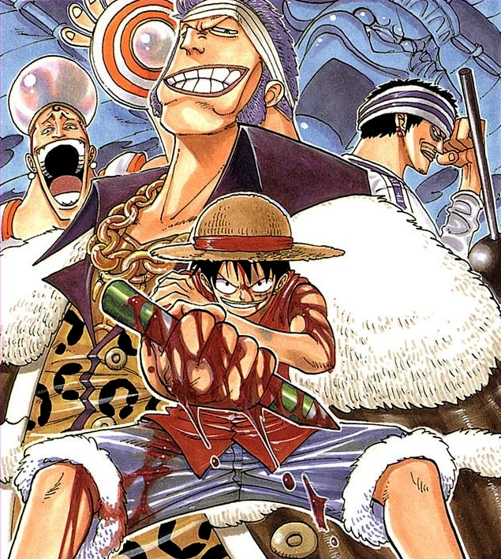

The Straw Hat Pirates meet Johnny and Yosaku, old friends of Zoro, who direct them to the restaurant ship Baratie, a "floating oasis" in the middle of the ocean. There they meet chef Sanji, who Luffy wishes to recruit as his crew's cook. However, pirate admiral Don Krieg sets his sights on the Baratie as a replacement for his devastated fleet, and the restaurant soon comes under siege. As the battle breaks out, Zoro comes face to face with his ultimate rival, Dracule Mihawk, while Nami absconds with the Going Merry, forcing the crew to split up and take chase while Luffy protects the Baratie from Krieg.
Of Bounty Hunters, Cooks, and Pirates
The Straw Hat Pirates—Luffy, Zoro, Nami, and the newly-joined Usopp—checked out their new pirate ship, the Going Merry, as well as designed a Jolly Roger for it. As a test of the ship's capabilities, Luffy and Usopp tested out one of the cannons on board by shooting at a rock formation. However, unbeknownst to them, two pirate hunters happened to be on the rock, and one of them attacked the ship in retaliation. Luffy fought him, but Zoro pointed him out to be a friend of his. The two bounty hunters were Johnny and Yosaku. After the Straw Hats apologized and Nami cured Yosaku of his scurvy, the crew realized that they were going to need a cook for the ship to maintain the healthy quality of their food stores before they could go to the Grand Line. To repay the favor for helping them, Johnny and Yosaku told the crew of a floating restaurant in the middle of the ocean where they might find a cook, helpfully navigating the crew to the aforementioned restaurant, the Baratie.
Upon their arrival, the group ran into trouble with a Marine Lieutenant named Fullbody. In the scuffle between the two, Luffy accidentally redirected a cannonball into the Baratie's roof. Luffy tried to make a deal with the captain, head chef, and owner of the ship, Zeff, to pay for the damages caused to the roof. Meanwhile, the assistant chef, Sanji, had an encounter with Fullbody as well and almost killed Fullbody for insulting the Baratie's food. A pirate named Gin, a member of Don Krieg's armada who was being detained by Fullbody, came onto the ship demanding food. Although denied food, beaten, and thrown out of the restaurant by the crew, Sanji secretly served the man a savory meal, saving Gin from starvation. Despite this act of kindness, when Gin left and returned to his ship, he told Don Krieg about the Baratie. After hearing about the ship, Don Krieg came to believe that taking over the Baratie was a key step in resurrecting his fleet.
Eventually, Krieg came to the restaurant under the pretense that he would not hurt anyone if he received some food. Of course, once he had eaten, Krieg attacked the cooks onboard and claimed the Baratie as his own, since his original ship and his entire fleet were destroyed seven days into the Grand Line by a mysterious figure. Just as important, his crew was on the verge of death from starvation. Surprisingly, Zeff gave a sack of food to Krieg and warned his cooks about the upcoming battle.
The Ultimate Armada and the Ultimate Swordsman
In the midst of the battle, Luffy (who had been working as "Chore Boy" to pay off the damages to the roof) and the other Straw Hats tried to get the Going Merry away from the battle. Only then did they realize that Nami had double-crossed them and stole their ship and treasure, with Zoro, Usopp, Johnny, and Yosaku preparing to go after her. However, their plans were brought to a halt when Krieg's galleon was suddenly sliced in half. Through the wreckage of the ship sailed the mysterious figure that Zoro instantly recognized as Dracule "Hawk-Eyes" Mihawk, one of the Seven Warlords of the Sea and the greatest swordsman in the world. Zoro decided to try and defeat Mihawk to gain the title of greatest swordsman in the world, but was clearly outmatched by Mihawk's strength.
However, Zoro impressed Mihawk with his courage and honor. As a result, Mihawk spared Zoro's life so that he could become a better swordsman and face him again someday. After the loss, Zoro vowed never to lose again before setting off with the other Straw Hats to go after Nami. Luffy stayed behind to help the Baratie, with Zeff accepting Luffy's request for his debt to be repaid as the reward for his assistance against the Krieg Pirates. With that, Mihawk departed, and Krieg directed his attention back to the Baratie.
The Chef and the Chore Boy's Battles
The Baratie raised its battle fins, which protect the restaurant portion of the Baratie, as the cooks and the Krieg Pirates began to fight. The cooks found that Krieg's pirates were not pushovers, and the battle was not going well for the cooks, until Sanji joined the fray. However, the tide turned back in Krieg's favor when his second mate, "Iron Wall" Pearl, arrived. At first, Sanji had the upper hand, but after Pearl nearly burned down the ship, Gin was forced to hold Zeff at gunpoint to keep Sanji from fighting back,[14] allowing Pearl to thrash Sanji around.
Sanji thinks back to when he was younger, onboard the passenger ship, Orbit, where he served as a cook in training. There, other cooks debate on the existence of the All Blue, a legendary sea where fishes from all the seas of the world can be found in one place. The cooks eat leftovers in the kitchen and are reprimanded by Sanji, telling them that the food was going bad. Suddenly, a pirate crew captained by Zeff boards their ship.
Before the pirates can finish looting the passenger ship, Sanji was thrown off the Orbit by a huge wave. He was saved by Zeff with him breaking off the ship's mast to be used to float to safety. There being a storm, both ships are sunk. The two end up stranded on a small island where it's impossible to fish for food due to the island's topography. The food from the wreckage is rationed, and both agreed to look out for a ship to save them from different parts of the island
Seventy days passed and Sanji's famished. He went to steal Zeff's food. However, Sanji discovered that Zeff gave all the food to him and driven by hunger, Zeff cut off his right leg to eat while waiting for rescue. Zeff told Sanji that he saved him because they shared the same dream, which was to find the All Blue. But since he could no longer go and search for it, he would build a restaurant in the sea instead. On the eightieth day, they were rescued.
Back to the Baratie, Gin surprisingly saved Sanji from Pearl, claiming he wanted to kill the cook himself. The two fought briefly, but with Sanji still injured from his fight with Pearl, Gin gained the upper hand. However, Gin could not bring himself to kill Sanji, which infuriated Krieg. As a result, he tried to kill Gin with a poison gas grenade known as MH5, which Gin barely survived. This act upset Luffy, who attacked Krieg and had a long fight on the wreckage of Krieg's ship.
Krieg used everything in his armor's arsenal to try to kill Luffy. However, Luffy countered and powered though each weapon, finally finishing off Krieg by slamming him into the side of the Baratie with his legs, although Krieg did not stay down until a final punch in the gut by Gin stopped him in his tracks. Krieg's final attack with his iron net sent Luffy into the ocean. Sanji saved Luffy from the ocean, and Gin and the rest of Krieg's pirates sailed away on a small dinghy.
The Straw Hats Finally Find Their Cook
Zeff and his cooks tried to persuade Sanji to leave by telling him a soup he cooked tasted awful. Sanji almost fell for it, but then overheard them when they actually said it tasted delicious.[26] He remembered his dream of finding the All Blue and finally agreed to join Luffy's crew. Just as he made his decision, Yosaku returned, traveling on a panda shark, and warned Luffy that Nami was heading toward a dangerous island. Zeff and the Baratie cooks all gave Sanji a tearful send-off before he, Luffy, and Yosaku headed out to catch up with the others.